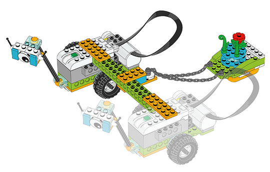

Build a Team Milo Transportation Device
Pair up the teams to complete this final part of the mission. Have them build the transportation device by physically connecting the two rovers together.
To split the task between the two teams, you could:
-
Have team A build the connecting part, steps 2 to 8
-
Have team B build the sleigh, steps 9 to 15

Building Help
For teams working on their own, note that you can connect up to three Smarthubs to the same device.
Teams who want to have more control over this build can remove the wheel that doesn’t have the rubber band attached to it.